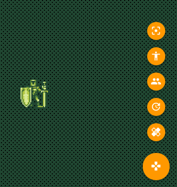
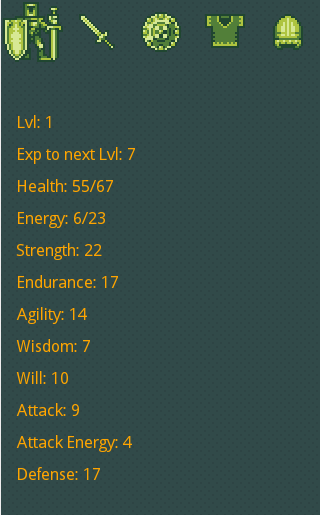

- Strength, which affects how much damage weapons do.
- Agility, which affects how efficiently characters use weapons and can allow characters to dodge blows.
- Endurance, affects the character's total HP and EP
- Wisdom, effectiveness of magical spells that the character casts - including attacks with staffs.
- Will, affects the character's total EP increases and also defines their resistance to magical attacks.

The Knight uses a sword to attack and is equipped with a shield, armour and a helmet for defense. The knight is not restricted in what defensiveness equipment he can use, which means his defense is high, suitable to close range combat with the sword. This combat style is matched by his high strength and endurance, as well as reasonable agility.

The Mage is the opposite of the knight. His wisdom is high to enable him to perform effective ranged magical attacks with his staff as well as resisting incoming spells as well. The mage has low strength and can only equip a limited set of defensive clothing, so he has to rely on being agile enough to dodge blows as well as using defensive and recovery spells.

The Rogue uses a balance of strength and agility to land deadly blows while dodging attacks. He can equip a good selection of armours, except for the heavier ones which would impede his movements. The rogue uses blades to attack close range and also can use a selection of throwing blades to attack from medium range.

The Archer is a long range combantant who uses a combination of bows and arrows to deal high damage from afar. The Archer's key skill is agility to enable him to fire arrows in quick succession, but he also needs strength to draw his bow. Like the Rogue, he can equip a good selection of armour and helmets but not the heavier items.
The Warlock is a physically strong character who wields an axe but can also use spells. The warlock has strong will, endurance and strength but is not very agile.
- Centre camera on the hero.
- Open or close equipment menu.
- Select single or team control
- Rest, will rest the party until they're fully rested or until another command is given.
- Heal, with quick button will select the weakest potion that the player is in possession of to heal the currently controlled hero.

